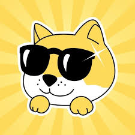

Yellow MR. Funny Dog
Here's a short paragraph description for Yellow MR. Funny Dog:
Meet Yellow MR. Funny Dog, the coolest canine on the block! With his signature black sunglasses and sunny yellow fur,
this laid-back pup brings joy and laughter wherever he goes. Always sporting a friendly smile and radiating positive vibes,
MR. Funny Dog is known for his playful personality and ability to brighten anyone's day.
Whether he's cracking jokes, going on adventures, or just chilling in style,
this charismatic character proves that life is always better when you're having fun and staying cool.